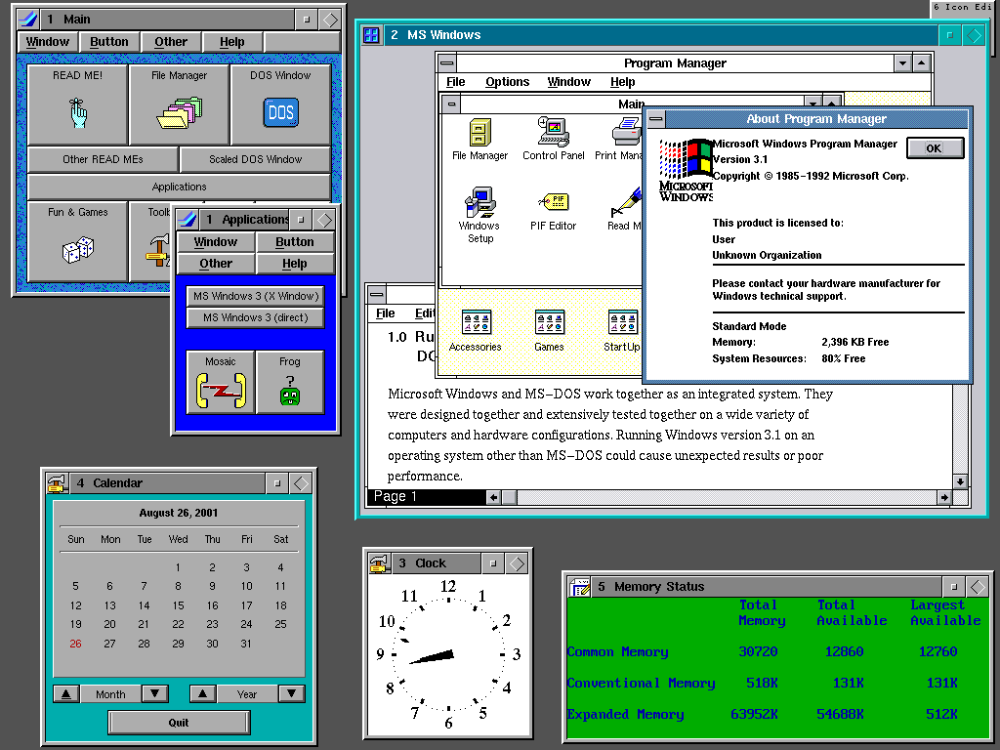

1.5 窗口表面(一本正经的念)
恭喜,读到这一小节证明你已经大概要逃脱Vulkan最底层的东西了,以后的章节我们会更加注重逻辑上的代码 不过,今天这一章就算了,我们还有点事情要做.
在app.rs里,修改下vki的创建方式,因为Vulkan是一个平台无关的库,平台无关就意味着可能和N种窗口系统打交道
所以我们必须手动规定一下他在跟那个窗口打交道,这里我们会把我们创建的window对象传入vki并在vki中进行绑定.
pub fn new() -> App {
let ev = EventsLoop::new();
let window = window_create(WINDOW_TITLE, 800, 600, &ev);
let vki = VKI::new(&window);//新增
return App {
window: window,
vki: vki,//更改
events_loop: ev,
};
因为窗口和操作系统密切相关,所以我们需要在platfrom下创建一个create_surface.rs并自觉添加到mod.rs里
use ash::version::{EntryV1_0, InstanceV1_0};
use ash::vk;
#[cfg(target_os = "windows")]
use ash::extensions::khr::Win32Surface;
#[cfg(all(unix, not(target_os = "android"), not(target_os = "macos")))]
use ash::extensions::khr::XlibSurface;
use ash::extensions::ext::DebugReport;
use ash::extensions::khr::Surface;
#[cfg(all(unix, not(target_os = "android"), not(target_os = "macos")))]
pub unsafe fn create_surface<E: EntryV1_0, I: InstanceV1_0>(
entry: &E,
instance: &I,
window: &winit::Window,
) -> Result<vk::SurfaceKHR, vk::Result> {
use std::ptr;
use winit::os::unix::WindowExt;
let x11_display = window.get_xlib_display().unwrap();
let x11_window = window.get_xlib_window().unwrap();
let x11_create_info = vk::XlibSurfaceCreateInfoKHR {
s_type: vk::StructureType::XLIB_SURFACE_CREATE_INFO_KHR,
p_next: ptr::null(),
flags: Default::default(),
window: x11_window as vk::Window,
dpy: x11_display as *mut vk::Display,
};
let xlib_surface_loader = XlibSurface::new(entry, instance);
xlib_surface_loader.create_xlib_surface(&x11_create_info, None)
}
#[cfg(target_os = "windows")]
pub unsafe fn create_surface<E: EntryV1_0, I: InstanceV1_0>(
entry: &E,
instance: &I,
window: &winit::Window,
) -> Result<vk::SurfaceKHR, vk::Result> {
use std::os::raw::c_void;
use std::ptr;
use winapi::shared::windef::HWND;
use winapi::um::libloaderapi::GetModuleHandleW;
use winit::os::windows::WindowExt;
let hwnd = window.get_hwnd() as HWND;
let hinstance = GetModuleHandleW(ptr::null()) as *const c_void;
let win32_create_info = vk::Win32SurfaceCreateInfoKHR {
s_type: vk::StructureType::WIN32_SURFACE_CREATE_INFO_KHR,
p_next: ptr::null(),
flags: Default::default(),
hinstance,
hwnd: hwnd as *const c_void,
};
let win32_surface_loader = Win32Surface::new(entry, instance);
win32_surface_loader.create_win32_surface(&win32_create_info, None)
}
大概粗略的讲解一下,以防小白用户不了解我上面在写什么
linux和其他Unix一般情况下是使用一个叫X Window System的东西来进行图形化的(Mac除外,也并不能除干净)

X Window System是一种以位图方式显示的软件窗口系统.
是麻省理工大学开发的一个标准工具和协议(注意不是软件).
X Window System通过软件工具及架构协议来创建操作系统所用的图形用户界面，此后则逐渐扩展适用到各形各色的其他操作系统上.
现在几乎所有的操作系统都能支持与使用X Window System(包括Windows)

但是Windows的视窗系统可比X Window System来的更牛,毕竟人家是微软砸钱写的.
Windows系统有一个非常牛逼的Windows API(如果你是Linux程序员,又是写过windows软件的那种,你应该能理解Windows.h多好用),Window上有过时(但是当时来说设计非常先进)的COM,有饱受诟病的MFC还有新一代的ActiveX 和 Win Form,所以理论上我们可以只写对于X Window System的支持,但是这样用户还需要安装一个X Window System的client,索性我们就写了native的Windows支持.
创建一个文件surface.rs并把他加入mod.rs,
use super::super::platforms::create_surface;
use ash::vk;
pub struct SurfaceStuff {
pub surface_loader: ash::extensions::khr::Surface,
pub surface: vk::SurfaceKHR,
}
pub fn create_surface(
entry: &ash::Entry,
instance: &ash::Instance,
window: &winit::Window,
) -> SurfaceStuff {
let surface = unsafe {
create_surface::create_surface(entry, instance, window).expect("创建窗口表面失败")
};
let surface_loader = ash::extensions::khr::Surface::new(entry, instance);
SurfaceStuff {
surface_loader,
surface,
}
}
在```physical_device.rs```中,我们需要更改一些地方,这个决定了窗口表面和GPU之间的交流
```rust
//uses
use super::surface::*;
//更改结构体,添加项 present_family
pub struct QueueFamilyIndices {
graphics_family: i32,
present_family: i32,
}
//调整函数 is_complete
self.graphics_family >= 0 && self.present_family >= 0
//调整函数 pick_physical_device
pub fn pick_physical_device(
instance: &ash::Instance,
surface_stuff: &SurfaceStuff,
) -> vk::PhysicalDevice {
let physical_devices = unsafe {
instance
.enumerate_physical_devices()
.expect("枚举GPU失败!")
};
println!("找到{}个Vulkan支持的设备:", physical_devices.len());
//把那个看起来迂爆了的for循环干掉
let result = physical_devices.iter().find(|physical_device| {
is_physical_device_suitable(instance, **physical_device, surface_stuff) //这个函数也需要调整
});
match result {
None => panic!("找不到合适的GPU! 请检查GPU驱动安装"),
Some(physical_device) => *physical_device,
}
}
pub fn is_physical_device_suitable(
instance: &ash::Instance,
physical_device: vk::PhysicalDevice,
surface_stuff: &SurfaceStuff, //加上了这个surface
) -> bool {
//省略n行
//在这个函数最后
let indices = find_queue_family(instance, physical_device, surface_stuff); //没错,这个也要改
//...
}
pub fn find_queue_family(
instance: &ash::Instance,
physical_device: vk::PhysicalDevice,
surface_stuff: &SurfaceStuff,//加上这个
) -> QueueFamilyIndices {
//省略n行
//下面这坨是在index += 1 前面
let is_present_support = unsafe {
surface_stuff
.surface_loader
.get_physical_device_surface_support(
physical_device,
index as u32,
surface_stuff.surface,
)
};
if queue_family.queue_count > 0 && is_present_support {
queue_family_indices.present_family = index;
}
if queue_family_indices.is_complete() {
break;
}
然后运行一下,应该不会发生什么,没崩溃就证明你抄的没什么问题.